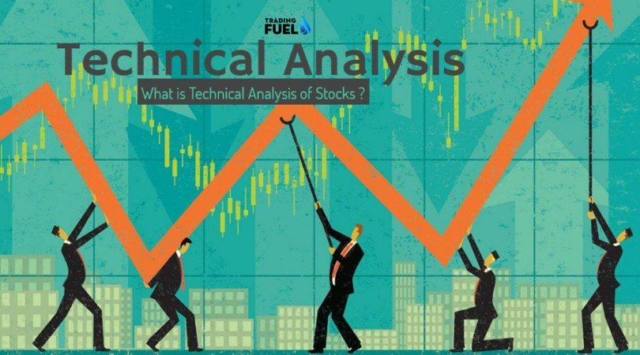

: trading Basics :: understanding the Different Ways to Buy and sell stock :The seC’s office of Investor education and Advocacy is issuing this Investor Bulletin to help educate investors about the different types of orders they can use to buy and sell stocks through a brokerage firm. The following are general descriptions of some of the common order types and trading instructions that investors may use to buy and sell stocks. Please note that some of the order types and trading instructions described below may not be available through all brokerage firms. Furthermore, some brokerage firms may offer additional order types and trading instructions not described below. Investors should contact their brokerage firms to determine which types of orders and trading instructions are available for buying and selling as well the firms’ specific policies regarding such available orders and trading instructions. |
 |
: technical analysis :Technical analysis is the study of financial market action. The technician looks at price changes that occur on a day-to-day or week-to-week basis or over any other constant time period displayed in graphic form, called charts. Hence the name chart analysis. A chartist analyzes price charts only, while the technical analyst studies technical indicators derived from price changes in addition to the price charts. Technical analysts examine the price action of the financial markets instead of the fundamental factors that (seem to) effect market prices. Technicians believe that even if all relevant information of a particular market or stock was available, you still could not predict a precise market "response" to that information. There are so many factors interacting at any one time that it is easy for important ones to be ignored in favor of those that are considered as the "flavor of the day." The technical analyst believes that all the relevant market information is reflected (or discounted) in the price with the exception of shocking news such as natural distasters or acts of God. These factors, however, are discounted very quickly. Watching financial markets, it becomes obvious that there are trends, momentum and patterns that repeat over time, not exactly the same way but similar. Charts are self-similar as they show the same fractal structure (a fractal is a tiny pattern; self-similar means the overall pattern is made up of smaller versions of the same pattern) whether in stocks, commodities, currencies, bonds. A chart is a mirror of the mood of the crowd and not of the fundamental factors. Thus, technical analysis is the analysis of human mass psychology. Therefore, it is also called behavioral finance. |
 |